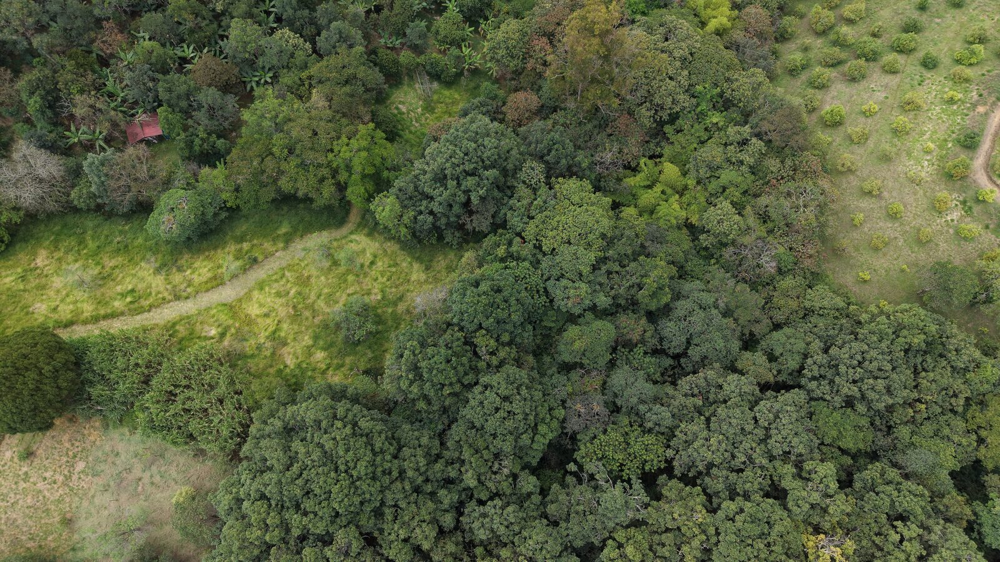
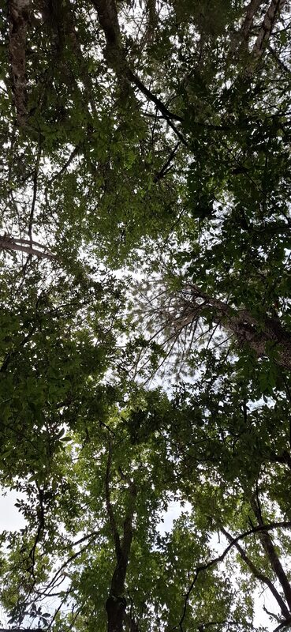
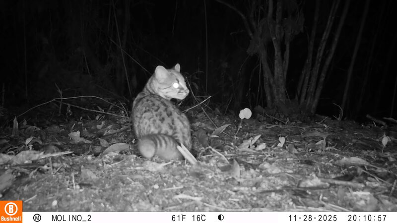
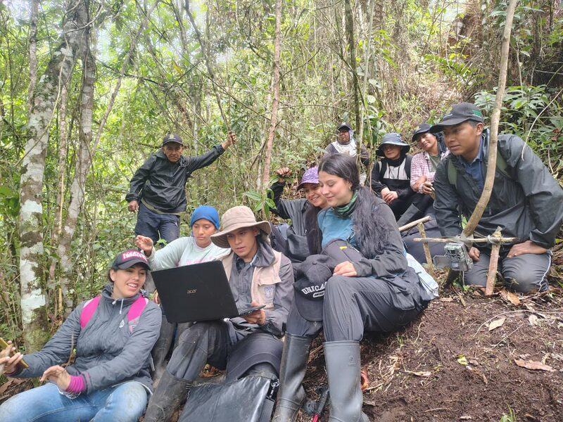

La Fundación Cuenca Viva trabaja para conservar, restaurar y gestionar de manera sostenible los servicios ambientales y los ecosistemas que los sustentan, promoviendo territorios social y ecológicamente resilientes frente a los cambios ambientales.

Tres frentes de trabajo articulados para proteger la cuenca y a las comunidades que dependen de ella.
Protegemos y recuperamos ecosistemas estratégicos —bosques, humedales y fuentes hídricas— mediante técnicas de restauración ecológica aplicadas en campo.
Promovemos el uso sostenible del agua, el suelo y la biodiversidad junto a autoridades ambientales y comunidades del territorio.
Fortalecemos las capacidades locales para enfrentar el cambio climático a través de educación ambiental y procesos comunitarios.
Trabajamos en tres proyectos de campo en la Subcuenca del río Molino y acompañamos la incidencia por los Pagos por Servicios Ambientales en Popayán.

Apoyo en actividades de restauración ecológica con técnicas de nucleación, aislamiento y control de especies invasoras.
Ver más →
Registro de fauna mediante foto trampeo y observación directa, apoyando la apropiación del conocimiento de la biodiversidad local.
Ver más →
Acompañamiento a Juntas de Acción Comunal en el desarrollo de proyectos comunitarios de educación ambiental PROCEDA.
Ver más →